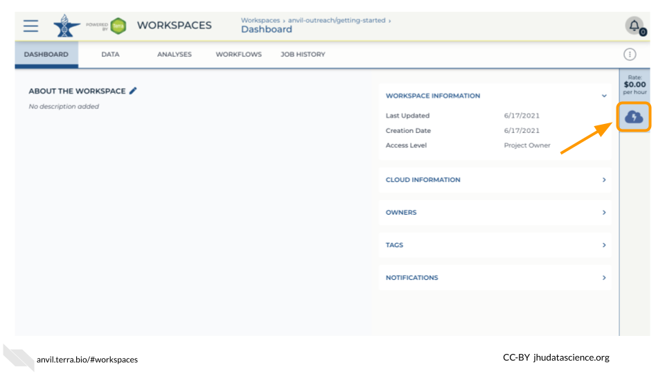

Chapter 8 Galaxy
One of the analysis platforms available on AnVIL is Galaxy. This platform offers a graphical interface for thousands of tools. This chapter focuses on launching and highlighting a few features for Galaxy.
8.1 Galaxy: Video tutorial
Here is a video tutorial that describes the basics of using Galaxy on AnVIL.
8.1.1 Objectives
- Start compute for your Galaxy on AnVIL
- Run tool to quality control sequencing reads
- Stop compute to minimize expenses
8.1.2 Slides
The slides for this tutorial are are located here.
8.2 Galaxy: Step-by-step guide
This step-by-step guide provides written instructions and screenshots for getting started with Galaxy on AnVIL.
8.2.1 Starting Galaxy
Note that, in order to use Galaxy, you must have access to a Terra Workspace with permission to compute (i.e. you must be a “Writer” or “Owner” of the Workspace).
Open your Workspace, and click on the “Environment configuration” button, a cloud icon on the righthand side of the screen.

Under Galaxy, click on “Create new Environment”. Click on “Next” and “Create” to keep all settings as-is. This will take 8-10 minutes.

Click on “Open Galaxy” when the environment is ready.

8.2.3 Deleting Galaxy environment
Once you are done with your activity, you’ll need to shut down your Galaxy cloud environment. This frees up the cloud resources for others and minimizes computing cost. The following steps will delete your work, so make sure you are completely finished at this point. Otherwise, you will have to repeat your work from the previous steps.
Return to AnVIL, and find the Galaxy logo that shows your cloud environment is running. Click on this logo.

Next, click on “Settings”. Click on “Delete Environment”.
<img src=“06-tools-galaxy_files/figure-html//1yYCg4cPVBMMDghT17B4XzROieqyMH99Ex9nMm_Scm9Q_ge20e585f11_0_256.png” alt=“Screenshot of the cloud environment pop out menu. The”Delete Environment” button is highlighted.” width=“480” />
Finally, select “Delete everything, including persistent disk”. Make sure you are done with the activity and then click “Delete”.